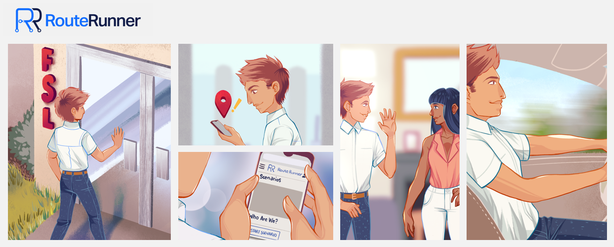

Business Need
This learning platform powered the launch of a new line of business for one of our clients implementating a same-day device replacement service for phones. The project required the hiring and training of a large group of employees in customer service, technical skills, and sales methodologies, as well as the creation of support teams and structures. Additionally, local partnerships and training for third-party vendors were necessary to ensure the successful launch of this service. Despite the aggressive deadline and the challenges of launching a new business in a remote and decentralized manner, the company was committed to transplanting its strong culture of great customer service and personal development to all locations, in order to create new business opportunities and build a strong national footprint for future ventures and partnerships.
My Role
- Led a team of developers, designers, and creative professionals to build a unique mobile learning platform from scratch and fill it with valuable content
- Collaborated with operations and training teams to scale the platform across the nation, troubleshoot any issues, analyze employee performance, and create content to address needs
- Led efforts to design an engaging virtual learning experience that is novel and fun, keeps employees invested in company culture, and mitigates meeting fatigue
- Coordinated and organized options for scheduling and training both part-time and full-time employees with adaptive modular learning experiences and only a small core team of trainers, accounting for different hours of operations and time zones
Engaging Mobile Learning Experience
The Equip mobile learning platform is an internally created and hosted mobile-friendly learning management system (LMS) that is designed to be responsive on all browsers. It was created using various Wordpress plugins, including LearnDash, H5P, and Grassblade xAPI. The LMS also includes custom on-the-job experiences that leverage innovative technology solutions such as asynchronous video chats for roleplays and interactive learning games.
Unique Solutions to Unique Learning Challenges
The challenge was to create an engaging mobile experience with a few key goals.
- Reinforce training concepts through practical training exercises including customer service skills, sales skills, processes and procedures, and general problem solving.
- Help operations build good habits during training. Once production started it would be vitally important that employees be where they needed to be on day 1.
- Provide operations with realistic route data - real-world data to supplement the simulations and general traffic information.
- Retain employees while building out our operational structure. The workforce was completely decentralized with no leadership in some markets.
- Occupy the trainees time in a practical way. In some cases employees needed to be kept busy for up to two months before having jobs.
- Deliver a completely virtual mobile training experience. Learning experiences needed to be available on any screen, anywhere, anytime. Employees would be taking training on the go.
Complete Simulated On-the-Job Experience
The Equip LMS aimed to create an experience that mimicked the job that employees would be doing once the program went live. Employees were required to meet at a local forward stocking location every day, just as they would in a real job. They were given a list of real addresses generated by Clik routing software, a randomly generated list of potential customers for a particular market. The employees then had an asynchronous role-play experience where they would call a "customer" and leave a recorded message with all the details they would be providing to real customers prior to visiting their house. These calls were later reviewed by trainers or operations leaders for coaching and feedback. After the call, the employees would then drive out to the simulated customer location, allowing the team to test the operational time tracks, routing software, and internal capabilities, and address any issues that might arise.
Variety of Learning Activities
- Live Training Sessions - Integration of live virtual training and coaching sessions to reinforce the content and provide an opportunity for role play and questions.
- Technical Training - Hosting articles, interactive troubleshooting tools, and learning courses around technical topics related to the job.
- Audio Content - Streaming audio training content to listen to while driving. Introductions to key concepts, podcasts, and example customer interactions.
- Customer Simulations - Providing role-play scenarios to practice addressing customer concerns and answer potential customer questions.
- Coaching Tools - Integrating asynchronous coaching tools for practicing and recording responses to customer scenarios.
- Learning Analytics - Tracking training progress including completion of content, activity success, and even employee location.

Effectiveness
The training experience powered by these tools helped support a successful launch and kickstarted this new line of business for the company.
- Employee Onboarding - Successfully trained a mix of 1,400 full-time and part-time employees through the program in the span of a few months.
- Customer Service - The operational team achieved a 4.97 star rating for more than 1,000,000 jobs.
- Expansion and New Business - The tool has been used to accelerate the training capabilities to explore new business ventures, innovate learning experiences, and upskill remote employees.